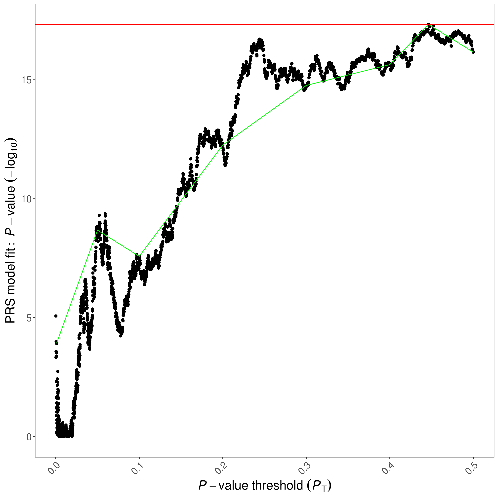

Input Data¶
Here, we briefly discuss different input files required by PRSice:
Base Dataset¶
Base (i.e. GWAS) data must be provided as a whitespace delimited file containing association analysis results for SNPs on the base phenotype. PRSice has no problem reading in a gzipped base file.
PLINK output is used, then please make sure there is a column for the effective allele (A1) and specify it with --A1 option.
On the other hand, if the base data follows other formats, then the column headers can be provided using the --chr, --A1, --A2, --stat, --snp, --bp, --se, --pvalue options
Important
PRSice requires the base file to contain information of the effective allele (--A1), effect size estimates (--stat), p-value for association (--pvalue), and the SNP ID (--snp).
If the input file does not contain a column header, the column can be specified using their index (start counting from 0) with the --index flag.
For example, with the following input format:
| SNP | CHR | BP | A1 | A2 | OR | SE | P |
|---|---|---|---|---|---|---|---|
| rs3094315 | 1 | 752566 | A | G | 0.9912 | 0.0229 | 0.7009 |
| rs3131972 | 1 | 752721 | A | G | 1.007 | 0.0228 | 0.769 |
| rs3131971 | 1 | 752894 | T | C | 1.003 | 0.0232 | 0.8962 |
the parameters can either be
--snp SNP --chr CHR --bp BP --A1 A1 --A2 A2 --stat OR --se SE --pvalue P
or
--snp 0 --chr 1 --bp 2 --A1 3 --A2 4 --stat 5 --se 6 --pvalue 7 --index
Strand flips are automatically detected and accounted for.
If an imputation info score or the minor allele frequencies (MAF) are also included in the file,
--info-base <Info Name>,<Info Threshold> and --maf-base <MAF Name>,<MAF Threshold> can be used to filter
SNPs based on their INFO score and MAF respectively.
For binary trait base file, SNPs can be filtered according to the MAF in case and control separately using
--maf-base <Name for Control>,<Threshold for Control>:<Name for Case>,<Threshold for Case>
By default, PRSice will look for the following column names automatically from the base file header if --index was not provided:
CHR, BP, A1, A2, SNP, P, INFO, SE (case sensitive) and OR / BETA (case insensitive)
Note
PRSice will ignore any columns that were not found in the base file (e.g. If--A2 B is specified but none of the column header is B, then PRSice will treat it as if no A2 information is presented)
Target Dataset¶
Currently two different target file format is supported by PRSice:
PLINK Binary¶
A target dataset in PLINK binary format must consist of three files: .bed, .bim, and a .fam file - where bed contains the compressed genotype data, bim contains the SNP information and fam contains the family information. Currently only SNP major PLINK format are supported (default output of the latest PLINK program).
The .bed and .bim file must have the same prefix.
If the .fam file follow a different prefix from the .bed and bim file, it can be specified using
--target <bim bed prefix>,<fam file>
Warning
The fam file MUST contains the correct number of samples or PRSice will crash
Note
-9 will NOT be considered as missing for quantitative traits
If the binary file is separated into individual chromosomes, then an # can be used to specify the location of the chromosome number in the file name. PRSice will automatically substitute # with 1-22
i.e. If tje files are chr1.
--target chr#
Note
Chromosome number substitution will not be performed on the external fam file as the fam file should be the same for all chromosomes.
BGEN¶
PRSice currently support BGEN v1.1 and v1.2. To specify a BGEN file, simply add the --type bgen or --ld-type bgen to the PRSice command
As BGEN does not store the phenotype information and sometime not even the sample ID, you must provide
a phenotype file (--pheno-file) for PRSice to run. Alternatively, the sample file can be provided using
--target <bgen prefix>,<sample file>
Note
The sample file is required even if --no-regress is set as the sample ID is required for output. This requirement might be losen in future versions
With BGEN input, a number of PRSice options become effective:
-
--hard: Normally, with BGEN format, PRS is calculated using the dosage information. But hard-thresholding can be performed by using the--hardoption. SNPs will then coded as the genotype (0,1 or 2) with probability larger than threshold specified by--hard-thres. If no such genotype is presented, the SNP will be coded as missing -
--hard-thres: The genotype probability threshold. SNPs with no genotype having a probability larger than this threshold will be treated as missing
Phenotype files¶
An external phenotype file can be provided to PRSice using the --pheno-file
parameter.
The first two column of the phenotype file should be the FID and the IID, or when
--ignore-fid is set, the first column should be the IID.
The rest of the columns can be the phenotype(s).
To specify a trait within the phenotype file, the column name for the trait can be specified using
--pheno-col, providing that the phenotype file contains a header.
Multiple column name can be provided via a comma separated
list: e.g. --pheno-col A,B,C,D. Trait(s) not found within the phenotype file will
be automatically skipped.
Important
The column name(s) should not contain space nor comma
Note
When more than one traits are provided, the column name will be appended to the output prefix.
LD reference¶
When the target sample is small (e.g. < 500 samples), an external reference panel can be used to improve the LD estimation for clumping.
The LD reference follows the same notion as the target dataset. Simply use
--ld <LD refernce>
to specify your LD reference panel file and --ld-type to specify the format
When a LD reference file is not provided and --no-clump is not specified, the target file
will be used as the LD reference panel
Important
Any parameters with the --ld prefix will only work on the file specified by the --ld parameter.
That is, if a LD reference file is not provided, none of the --ld-* options will be used.
If a different set of filtering is to be perforemd on the target file when performing LD calculation, it must
be provided separately to the --ld parameter
e.g. --target <target> --ld <target> --keep <samples for PRS> --ld-keep <samples for LD>
Note
BGEN file will always be hard coded when used to estimate the LD
Clumping¶
By default, PRSice will perform Clumping to remove SNPs that are in LD with each other.
Similar to PLINK, the r2 values computed by PRSice are based on maximum likelihood haplotype frequency estimates.
The pearson correlation r2 calculation is also supported and can be specified by using --pearson.
Both cases and controls are included in the LD calculation.
Alternatively, a combination of --ld and --ld-keep/-ld-remove can be used to restrict LD calculation in control samples.
Clumping parameters can be changed by using the --clump-kb, --clump-r2 and --clump-p option.
Clumping can be disabled using --no-clump
PRS calculation¶
PRSice allow different genetic models to be specified (e.g. add, dom, het, rec), and the polygenic score of each of those are calculated differently
Assuming \(S\) is the summary statistic for the effective allele and \(G\) is the number of the effective allele observed, then the main difference between the models is how the genotypes are coded:
For additive model (add)
For dominant model (with respect to the effective allele of the base file)
For recessive model (with respect to the effective allele of the base file)
For heterozygous model
Then depending on the --score option, the PRS is calculated as (assuming \(M\) is the number of SNPs)
--score avg (default):
$$
PRS = \sum{\frac{S\times G}{2}}\div M
$$
--score sum:
$$
PRS = \sum{\frac{S\times G}{2}}
$$
--score std:
$$
PRS = (\sum{\frac{S\times G}{2}} - \text{Mean}(PRS))\div \text{SD}(PRS)
$$
Sometimes, sample can have missing genotype.
The --missing option is used to determine how
PRSice handle the missingness.
When not specified, the Minor Allele Frequency (MAF) in the target sample will be used as the genotype as the sample with missing genotype.
If --missing NO_MEAN_IMPUTATION is set, the SNP for the missing
samples will be excluded.
Alternatively, if --missing CENTER is set, all PRS calculated will be minused by
the MAF of the SNP (therefore, missing samples will have PRS of 0).
Output of Results¶
Bar Plot¶
Note
Hereon, [Name] is assumed to be the output prefix specified using --out and [date] is the date when the analysis was performed.
PRSice will always generate a bar plot displaying the model fit of the PRS at P-value threshold as indicated by --bar-levels
The plot will be named as [Name]_BARPLOT_[date].png . An example bar plot:

High Resolution Plot¶
If --fastscore is not specified, a high-resolution plot named [Name]_HIGH-RES_PLOT_[date].png will be generated.
This plot present the model fit of PRS calculated at all P-value thresholds.
Important
The model fit is defined as the \(R^2\) of the Full model - the \(R^2\) of the Null model
For example, if Sex is a covariate in the PRSice calculation, then model fit = \(R^2\) of \(Pheno\sim PRS+Sex\) - \(R^2\) of \(Pheno\sim Sex\)
A green line connects points showing the model fit at the broad P-value thresholds used in the corresponding bar plot are also added. An example high-resolution plot:

Quantile Plots¶
If --quantile [number of quantile] is specified, a quantile plot named [Name]_QUANTILE_PLOT_[date].png will be generated.
The quantile plot provide an illustration of the effect of increasing PRS on predicted risk of phenotype.
An example quantile plot:

Specifically, the quantile plot is generated by the following steps
- Regress out the covariate from the phenotype (if any) and use the standardized residual to represent the phenotype
- Distribute samples into user specified number of quantiles
- Treat the quantiles as a factor, where the
--quant-refis the base factor - Perform regression with \(Pheno \sim Quantile\)
- Set the reference quantile to have coefficient of 1 (if binary) or 0 (otherwise)
The point of each quantile is their OR (if binary) or coefficient (otherwise) from the regression analysis
A text file [Name]_QUANTILE\_[date].txt is also produced, which provides all the data used for the plotting.
Moreover, uneven distribution of quantiles can be specified using the --quant-break function.
For example, to replicate the quantile break from Wen et al (2016):
| PRS (%) | Predicted OR | Observed OR (95% CI) |
|---|---|---|
| 0–1 | 0.37 | 0.39 (0.27–0.57) |
| 0–10 | 0.52 | 0.55 (0.49–0.61) |
| 10–20 | 0.67 | 0.71 (0.64–0.79) |
| 20–30 | 0.77 | 0.74 (0.66–0.82) |
| 30–40 | 0.86 | 0.88 (0.80–0.98) |
| 40–60 | 1.00, reference | 1.00, reference |
| 60–70 | 1.16 | 1.10 (0.99–1.21) |
| 70–80 | 1.29 | 1.24 (1.13–1.37) |
| 80–90 | 1.49 | 1.52 (1.38–1.67) |
| 90–100 | 1.97 | 1.93 (1.76–2.12) |
The following command can be added to PRSice command:
--quantile 100 \ --quant-break 1,10,20,30,40,60,70,80,90,100 \ --quant-ref 60
Specifically, --quant-break indicates the upper bound of each group and --quant-ref specify the upper bound of the reference quantiles
Note
The quantile boundaries are non-overlapping, with the inclusive upper bound and exclusive lower bound
PRS model-fit¶
A file containing the PRS model fit across thresholds is named [Name].prsice; this is stored as
Set, Threshold, \(R^2\), P-value, Coefficient, Standard Deviation and Number of SNPs at this threshold
Important
\(R^2\) reported in the prsice file is the \(R^2\) of the Full model - the \(R^2\) of the Null model
Scores for each individual¶
A file containing PRS for each individual at the best-fit PRS named
[Name].best is provide. This file has the format of:
FID,IID,In_Regression, PRS at best threshold of first set, PRS at best threshold of second set, ...
Where the In_Regression column indicate whether the sample is included in the regression model performed by PRSice.
If --all-score option is used, a file named [Name].all.score is also generated
This file has the format of
FID, IID, PRS for first set at first threshold, PRS for first set at second threshold, ...
If --all-score is used, the PRS for each individual at all threshold and all sets will be given.
In the event where the target sample size is large and a lot of threshold are tested, this file can be large.
Summary Information¶
Information of the best model fit of each phenotype and gene set is stored in [Name].summary. The summary file contain the following fields:
- Phenotype - Name of Phenotype
- Set - Name of Gene Set
- Threshold - Best P-value Threshold
- PRS.R2 - Variance explained by the PRS. If prevalence is provided, this will be adjusted for ascertainment
- Full.R2 - Variance explained by the full model (including the covariates). If prevalence is provided, this will be adjusted for ascertainment
- Null.R2 - Variance explained by the covariates. If prevalence is provided, this will be adjusted for ascertainment
- Prevalence - Population prevalence as indicated by the user. "-" if not provided.
- Coefficient - Regression coefficient of the model. Can provide insight of the direction of effect.
- P - P value of the model fit
- Num_SNP - Number of SNPs included in the model
- Empirical-P - Only provided if permutation is performed. This is the empirical p-value and should account for multiple testing and over-fitting
Only one summary file will be generated for each PRSice run (disregarding the number of target phenotype used)
Log File¶
To allow for easy replication, a log file named [Name].log is generated for each PRSice run, which contain the all the commands used for the analysis and information regarding filtering, field selected etc.
This also allow easy identification of problems and should always be included in the bug report.